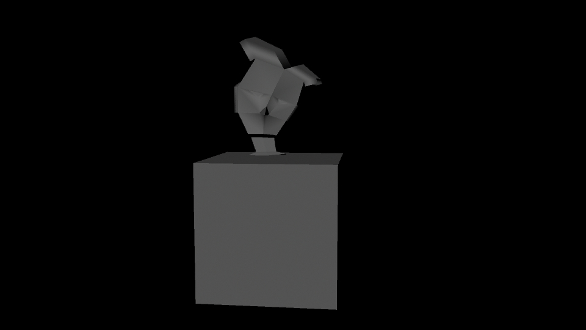
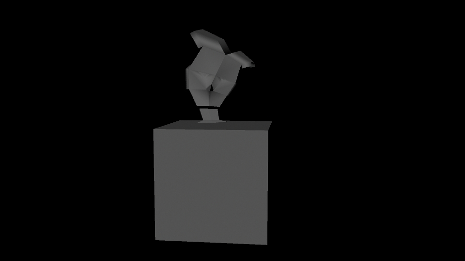

Week 1
Exercise 1.1
The approach for the first section of lab 1 exercise is to try to create something simple of a house and with people to decorate the environment. The reason for such is that as a kid, whenever I learn how to draw or make something, I always start with this basic concept, and since I am learning a new software, I wanted to translate that idea.


Exercise 1.2
In the second exercise, I wanted to create a head sculpture that was abstract in terms of shape which seems to add a bit of movement when the audience looks at it. However, I kept the model to be rather simple during this exploration and learning stage since the higher level techniques have not been learned yet.
 

Week 2
Exercise 2.1
For this exercise, I wanted to recreate the balance figure of a human character as what it will look like if they were trying to balance on a moving cart.

Exercise 2.2
In the images below, the approach that I went for is to show that the doll figure is really small inside the drawer and how it wants to leave, but then there is a large girl present. With this scene, I also wanted to translate the idea from Toys Story.